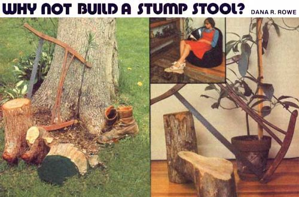
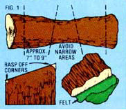

You've probably seen a tree trunk-type footrest before, in which case you don't need me to tell you what a stump stool is. Until you've actually owned one of these dandy foot supports yourself, however, you won't appreciate how aesthetic and functional an addition to your living room one or two of the leg rests can be.
Stump stools are eye-catching ... fun to manipulate with your feet (they can do for your feet what a worry stone does for the hands) ... and-best of all-easy to make. A bucksaw and a rasp are all the tools you'll need to make a stump stool, and the raw material costs you nothing except a walk in the forest.
When I'm scouring the woods for stool material, I look for dead trees that have been weathered clean of their bark. Their weather-stripped trunks are usually a delightful shade of gray or brown and (because they're so dry) very light and strong. A tree with a diameter of 9" to 18" will do just fine.
If you can, try to find one of the weathered trunks that's blown part of the way over, but still isn't touching the ground. (Trees that have come in contact with the earth are usually rotted out, or beginning to rot.) A tree that lists is easier to fell with a bucksaw than one that stands straight up.
I find it's easiest just to cut the stools right in the woods and take 'em home with me ten at a time in a duffel bag. (Ten is a good number ... it represents about an afternoon's worth of rasping and sanding.) Once you've felled a tree, just make two crosswise cuts-one at right angles to the tree's centerline, and one at an angle of 30* to the first cut-in the thickest area(s) of the trunk, as shown in Fig. 1. (The short side of the bole should measure approximately 7" to 9".) Keep doing this until you have the number of stools you want.
At home, use a wood rasp to round off the stool's sharp edges. I prefer to use a file-type rasp with one flat and one round side. The rounded side is great for getting into the concave crannies that Mother Nature often works into her trunk designs. The flat edge, on the other hand, is best for smoothing out the naturally convex surfaces of the wood.
This can be the end of the job right here ... if you want a completely natural, unfinished piece of furniture. Otherwise, you may want to plane and/or sand the stool's top surface and finish the piece off with a stain and a coat of varnish. (I prefer the unfinished gray or tan wood, myself.) If you decide to use a stain, remember to work quickly, since the porous wood will soak the liquid up within seconds. (Use a brushand-wipe, brush-and-wipe system.) Be ready, too, for the wood to take much more varnish than you'd otherwise expect.
I've never wanted to paint a stump stool, but it can be done. Again, though-because of the wood's porosityyou'll need several extra coats of the preservative to completely fill the wood.
If you plan to use your new footrest on a hardwood floor, you'll want-at this point-to glue a felt pad to the bottom of the stool to protect your floor's finish. Just trace around the stump on a large piece of felt, cut the pad out, and glue it to the wood. (I've found that Elmer's Carpenter Glue works well.)
An interesting variation on the above theme will result if you cut your stool from a tree with a fork in it. Just make your 30° angled cut immediately below the point where the trunk divides and make the other (perpendicular) cut across the two upper branches. This way, the stool will broaden from floor to footrest, and the top surface will have a wonderfully abstract shape.
Now. Grab that book you've been meaning to read, settle back in your favorite chair, put your feet up on your new stump stool, and ask yourself: Now wasn't that worth the effort?
|
 PHOTOS BY PETER TRAVERS |
 |
|